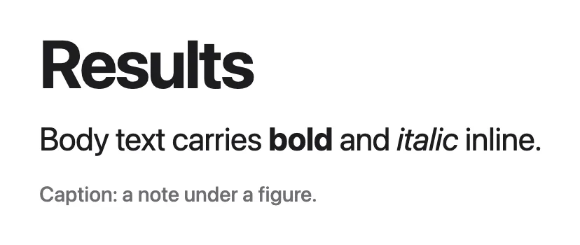
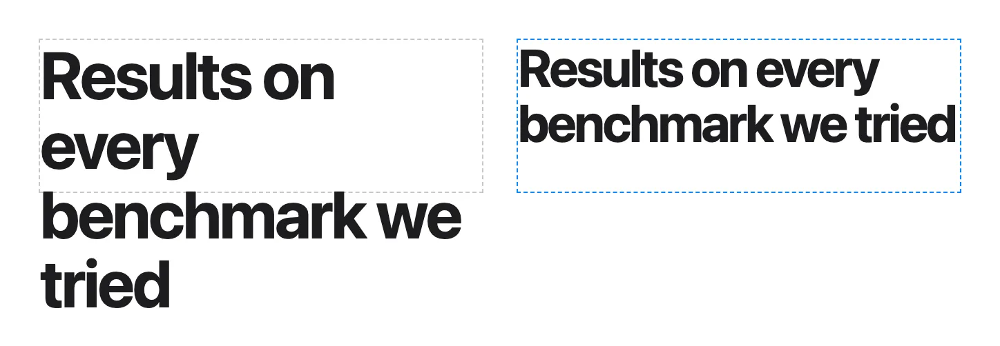

Every feature DeckWerk has, and where to find it in the app.
Each entry says what the feature does and where it is. Features go by the names Keynote and PowerPoint use, and search finds those names too. Paths use the labels the app shows: Props›Typography›Role is the Role field in the Typography section of the Props tab. Shortcuts are written for macOS; on Windows and Linux use Ctrl for Cmd.
Where an agent writes the feature in a slide's HTML, In HTML shows the markup. Entries marked (new) are on a branch and not in a release yet.
The slide thumbnails down the left of the window. Drag a thumbnail to move the slide. With the thumbnails focused, Return adds a slide, Delete removes one and the arrow keys move between slides.
Where:Left column›+ Slide, Duplicate, Hide, Delete, or right-click a thumbnail
A skipped slide stays in the deck and can still be edited. Presenting and the web export leave it out. Several skipped slides in a row fold into one "N hidden" row in the navigator.
Where:Slide navigator›Hide, or right-click a thumbnail›Hide slide
Each slide can have its own background colour. A full-bleed background picture is set in HTML or by an agent; the editor shows it but has no control for it.
A theme is a set of fonts for title, body and caption, a colour palette, and background and text colours. DeckWerk ships 12 themes, each in a light and a dark version. Choosing a theme moves nothing on a slide.
Where:Design tab›Current theme›click the theme card
Restyle slides that already exist: the whole deck, the selected slides or the selected objects. You choose which text styles and which properties (typography, type sizes, colour) to take.
While you drag, objects snap to the slide edges and centre, to other objects' edges and centres, to equal spacing and to matching sizes. Hold Cmd (Ctrl on Windows and Linux) to drag without snapping.
Where:On the slide, while moving or resizing an object
Where:Right-click›Bring to front, Bring forward, Send backward, Send to back, or Props tab›Geometry›Layer›Arrange, or ] and [ (with Shift for front and back)
A text style (Title, Body or Caption) takes its font, size and colour from the theme, so a theme change restyles the text. A "+" after the style means the box has its own changes; Reset to theme removes them.
Where:Props tab›Typography›Role, and Reset to theme below it

In HTML
<h1 class="role-title">A title</h1>
<p class="role-caption">Figure: First Author et al.</p>
Pick a font (theme fonts first, then installed fonts), a size in pixels and a weight from 1 to 1000. When the text has been shrunk to fit, the size field says "Fitted to N px".
Where:Props tab›Typography›Font family, Font size, Font weight
Shrinks text so it stays inside its box. Size box to text makes the box hug its text instead. With automatic line breaks off, a long line either shrinks or is condensed sideways.
Where:Props tab›Paragraph›Auto-fit text to box, Size box to text, Disable automatic line breaks›Compress by

In HTML
<h1 class="role-title" data-autofit="true">A long title</h1>
<p data-nowrap data-fit-mode="condense">One line, never wrapped</p>
Rectangles, ellipses, trapezoids, parallelograms, four-sided shapes, lines and arrows. Change the kind, fill, outline, width and corner radius after inserting.
Draw a free-form shape. Click for corners, drag for curves. Click the first point to close and fill the shape, or press Return to finish an open line. Backspace removes the last point.
A drop shadow with colour, blur, angle and distance, or a curved shadow where the object lifts at its bottom corners. The shadow follows the shape's own outline.
Where:Props tab›Shadow›Drop shadow›Style: Drop or Curved
Drag or paste MP4, MOV, M4V, WebM, MKV or AVI. A slide video plays by itself, loops and is muted unless you change it. Formats a browser cannot play are converted on import.
Where:Drag a file onto the slide, then Props tab›Playback›Autoplay, Loop, Mute, Controls, Play preview
Two pictures or videos stacked in one box with a divider between them: the upper one shows left of the divider, the lower one right of it. Videos compared this way also play together. The presenter can drag the divider while presenting.
Where:Select two images or two videos›Props tab›Compare›Arrange as wipe, then Wipe›Divider, Turn off wipe
Selecting two images or two videos shows a small Wipe button under them on the slide. It does the same as Arrange as wipe. The same item is in the right-click menu.
When the two clips of a comparison differ in length: Shortest ends with the shorter clip, Hold last runs to the longer clip and freezes the shorter one on its last frame, Black runs to the longer clip and blacks out the shorter one.
Where:Select a compared pair of videos›Length›Shortest, Hold last, Black, or Props tab›Wipe›Length
While presenting, hovering a video shows a bar along its bottom: play and pause, a scrubber over the trimmed part, the time and a speed slider. For videos played together it controls them all. It never shows in PDFs or thumbnails.
Where:While presenting, move the pointer over a video
Speed up or slow down every video on the current slide while presenting: 0.25, 0.5, 1, 1.5, 2, 4 or 8 times. Leaving the slide returns to normal speed.
Where:While presenting,›or ] (faster), < or [ (slower), = (normal), or the speed slider in the video controls
Every image, video, web page and 3D model in the deck, with the slides that use it. Search by file name, filter by type, add a file to the current slide, and find and remove unused files.
Where:Media tab›Search, Type, On this slide, +, Unused files›Rescan
Edit w/ ffmpeg re-encodes a video into a new file. Rasterize & paint paints over an image as a new PNG. The original is kept in both cases. Download original saves the source file.
Where:Props tab›Advanced›Edit w/ ffmpeg… or Rasterize & paint…, or right-click›Download original…
Animations
The app calls them builds, in the Build tab (Keynote: Animate; PowerPoint: Animations).
An animation shows, hides or moves an object during a slide. Each step runs on a click, with the step before it, after it, or when a video ends, with an optional delay. Objects without an animation are on screen from the start.
Where:Build tab›select an object›Add animation, then the trigger (click, after, with, media) and the action menu
While the Build tab is open, each object shows a numbered badge for its steps. Drag a step's handle to reorder it; drop it on the middle of another step to play both together.
A line or arrow grows from its start, head first. A box, ellipse or drawn shape is traced along its outline and its fill fades in after. Works on every line style.
Movements that end where they began. Pulse enlarges the object, holds, and settles back; pulse (lift) also casts a shadow and rises above its neighbours. Jiggle wobbles side to side. Pop eases up and back down. Damping (0 to 1) sets how soft the movement is.
Where:Build tab›Add pulse, then action menu›pulse, pulse (lift), jiggle, pop, and scale, damping
Preview plays the selected object's animation in place. Play slide runs every step of the slide in turn. The button reads Stop while playing; Esc also stops.
Animate from one slide to the next (Keynote calls it Magic Move): paired objects move, resize and change colour, and everything else fades. Enable and Auto-Pair pairs what it can match. Duration is per slide; the motion curve is for the whole deck.
Where:Select the earlier slide›Props tab›Morph›Enable and Auto-Pair, Duration, Motion curve
When two paired text boxes hold different equations, each shared symbol travels to its new place and size, and symbols only one side has fade in or out. It happens on its own for any paired maths.
Mark terms in the TeX with \step{1}{…}, \step{2}{…}, and the equation appears one term per click. Terms not yet shown keep their place, so nothing moves.
Reveal or highlight lines step by step. Steps are separated by ;: 1-3 reveals lines 1 to 3, highlight:5 dims every other line, highlight:all ends the highlight.
Bar, stacked bar, line, area and scatter charts drawn from CSV kept in the chart. They use the theme's fonts and colours and stay editable. Cells may carry units like 12% or 3.2 ms.
Where:Toolbar›Chart›Bar, Stacked bar, Line, Area, Scatter or From CSV file…, or drop a CSV file on the slide, then Props tab›Type, Data, Axes
Palettes: Deck, Tableau 10, Okabe-Ito (colour-blind safe), Viridis, Grayscale + accent, or your own from a hex list or a coolors.co link. Legend position, value labels on bars and text size are set here too.
Where:Props tab›Style›Palette, Import palette, Highlight, Legend, Value labels on bars, Text size
A related-work card: the top of the paper's first page (or a screenshot of its project page) with a shadow, the title in bold and an "Authors, Venue Year" line. It is three ordinary objects you can move and restyle.
Where:Toolbar›Paper›arXiv, DOI or web address, or Choose PDF…, then Insert
Drop a .glb, .gltf or .obj file on a slide to get an interactive 3D view. Models dropped together share one view. While presenting, drag to orbit and scroll to zoom.
Where:Drag a model onto the slide, then Props tab›Web page›Shading (auto, clay, normals, depth, uv, wireframe)
A complete HTML page running live in a box on the slide: an interactive chart, a slider demo, a page someone already built. It runs sandboxed with no network. The editor shows a still of it until you interact with it.
Where:Added by an agent, then double-click it, or Props tab›Web page›Interact with page, and Page receives clicks while presenting
Markup the editor has no object for (a multi-part SVG, a clipped panel) is kept as one HTML region. You can move and resize it; its contents change only by rewriting the markup.
Starts from the current slide. With several slides selected in the navigator, only those are shown. The audience view goes to a second display when there is one.
Your screen shows the current and next slide, elapsed and per-slide timers, the time and your notes, with Previous, Blank, Next, Switch displays and End show. It opens on its own when there are two displays.
Where:Toolbar›Present menu›Present in Speaker View
Next: Right, Down, Space, Page Down, Return or click. Previous: Left, Up, Page Up, Backspace or right-click. Home goes to the first slide, Esc ends the show. The pointer hides after a second without moving.
In a collaboration session, hand the remote to someone in it, for example your own phone. Their screen shows the current and next slide, notes, timers and large Previous and Next buttons. Swiping works too.
Where:Presenter display›Remote…, or R, or the Remote… button in the presentation, then Give remote
A session link opened on a phone gives a layout made for it: slides, notes and comments. On a phone you can edit presenter notes and comments and present, but not change slides.
Where:Open the invite link on a phone›Notes, Comments, All slides, Present, Agent
Starts a live session and copies an invite link. Anyone on the same local network or tailnet opens it in a browser, enters a name and edits with you. End collaboration saves and closes the session for everyone.
Threads on a slide or an object, with replies, Resolve and a Link that opens the deck at the thread. Open threads show as an amber highlight in the editor, never when presenting.
Where:Right-click an object›Comment…, or right-click the slide background or a thumbnail›Comment on slide…
Keep a folder of decks available for editing in the browser without the desktop app running. Each subfolder with a deck shows up in the list. Run it only on a network you trust.
Where:npm run collab -- /path/to/decks in a DeckWerk checkout
The agent exports slides as an HTML page, edits it, and saves it in the deck's edit/ folder. The editor picks up each save within a few seconds as one undoable change. New slides start from slide-agent new, which can only add.
Where:slide-agent context, slide-agent inspect --html --slide 4, slide-agent new
An agent can render slides to PNG (with every animation finished, or as a contact sheet) and check for overflowing text, missing files and broken references.
Name slides by the number the navigator shows. Say what should change and what must stay. Ask for the deck's own style unless you want a new one, and ask the agent to render the slides it changed. For example: "Slide 12 is too dense: split it into two slides, keep the figure, move the details to the notes, and render both."
A folder that plays the deck in any browser with the same player the app uses. Balanced and Compact cut each video to the part the slides play and re-encode it; Original copies media unchanged. Skipped slides are left out.
Where:File›Save and export›Export Web…›Media quality
Open a .key, .pptx, .ppsx or .potx file as a new DeckWerk deck. Keynote does not need to be installed. Anything that cannot be converted becomes a placeholder.
Where:File›Import›Keynote… or PowerPoint…, or the welcome screen
The font of the editor's own controls (DeckWerk's Monaspace Krypton, the system font, or an installed font) and their size, from 85% to 130%. Slides keep their own fonts.
Cmd+Z undo, Cmd+Shift+Z redo, Cmd+S save, Cmd+D duplicate, Cmd+A select all, N new slide, Cmd+R rulers, Escape deselect. On Windows and Linux use Ctrl.